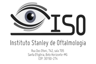
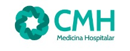
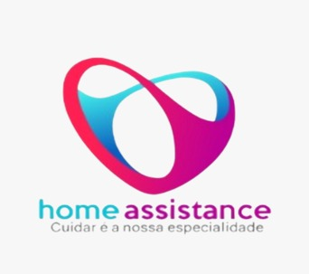
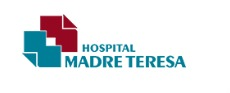
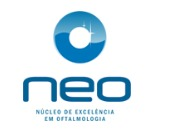

Gestcon Saúde
Quem somos
Quem somos
Experiência prática para transformar a gestão em saúde.
A Gestcon Saúde nasceu da vivência de consultores em diferentes contextos da saúde. Nossa atuação une formação, experiência e conhecimento das necessidades de clínicas, hospitais, laboratórios, consultórios e operadoras.
Oferecemos consultoria e assessoria sob medida nos setores público e privado, com alternativas para desafios técnico-financeiros e assistenciais.
Uma relação construída com respeito, transparência e foco nas necessidades de cada cliente.
Parcerias que fazem parte da nossa trajetória
Conheçam nossos clientes
Instituições que confiaram na Gestcon Saúde para apoiar seus desafios de gestão.




